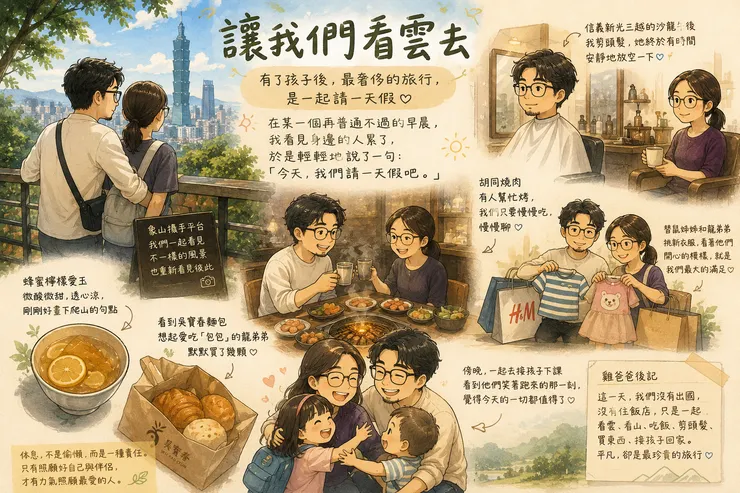

某個再普通不過的早晨，我們都累了，我輕輕地說了一句：「今天我們請一天假吧。」

我們不是想旅行，只是需要好好呼吸
現在才發現，有了小小孩以後，最奢侈的旅行，不過是一起請一天假～
最近，雞爸爸和鼠媽媽都很累。
工作忙、孩子忙、家裡的事情也忙。
每天睜開眼，就是趕著送鼠姊姊上學、送龍弟弟去保母家、趕著上班；下班後趕著接孩子、吃晚餐、洗澡、陪睡。等到一切忙完，不是沒有話聊，而是已經沒有力氣聊天。
更可怕的是，那些原本微不足道的小事，也開始悄悄帶上情緒。
一個杯子放錯位置、一句話語氣重了點、一件事情沒做好，都可能成為冷戰的導火線。
不是因為不愛了，只是兩個人的電量，都快歸零了。
偏偏那一天，鼠媽媽的生理期也來報到，身體上的不舒服，加上工作與育兒長期累積的壓力，她沒有抱怨，也沒有喊累，只是臉上的笑容，比平常少了一些。
我知道，她快撐不住了。我也沒有想太多，只是很自然地說了一句：
「今天，我們請一天假吧。」
沒有排行程、沒有訂餐廳、甚至不知道要去哪裡。
我們只是想暫時離開那些永遠做不完的待辦事項，好好呼吸一天。
女孩為什麼嘆息 莫非心中藏著不如意?
回想鼠媽媽約會常去的地點：「要不要去看電影？還是去海邊吹吹風？」
原本以為身體正不舒服的她，會想待在冷氣房。
沒想到，她說：「不如去爬象山吧。」
聽見這個答案，我心裡也忽然有種回家充電的感覺。
因為以前住在永吉路附近，象山一直都是我最熟悉的地方。
它不是熱門景點，只是在那裡，安靜地等著每一個願意被它療癒的人。
於是，我們一步一步踩著石階往上走，汗水很快浸濕了衣服。
隨著身體開始流汗，卡在胸口、累積了好多天的壞情緒，也好像一點一滴跟著流走了。
在攝手平台看向遠方 山只靜靜地陪伴
台北101就在眼前。
腳下，是每天忙碌生活的城市。
每天，我們都生活在這座城市裡。
卻很久沒有停下來，好好看看它。
婚姻，好像也是如此，每天都在一起。
是該留些時間，好好靜下來看看彼此。
短暫的放鬆後 腦海裡依舊都還是孩子
下山後，登山口有一間賣蜂蜜檸檬愛玉的小店。
我們點了一碗，不加冰塊。這剛剛好的沁涼，和這趟爬山一樣舒服、清爽。
喝完愛玉，我們慢慢散步往信義區。一路聊天、一路想著午餐要吃什麼。
經過吳寶春麵包店時，腦海裡想到的還是那個愛吃「包包」的龍弟弟～
終究還是進去挑了幾顆最愛的麵包，其實心中忍不住笑了～
原來，成為爸爸媽媽以後，即使只有兩個人約會，心裡還是裝著孩子．．．
適度釋放壓力 別把愛情走入了死胡同
提著麵包，我們一路散步到松仁路。沒想到，胡同燒肉竟然就這樣出現在眼前。
「妳不是一直說想吃這間嗎？」我們彼此笑了，沒有訂位、沒有規劃。
就是這麼剛好，在這一天走出這個活胡同。
這大概就是說走就走的旅行最迷人的地方。有些驚喜，不是安排來的，就是這麼剛好。
店員的桌邊服務，替我們烤好每一道料理。
今天，我們不用忙著剪肉、吹涼，也不用擔心孩子坐不住。
只肩並肩坐著，慢慢吃，慢慢聊天。慢慢把那些最近沒有說出口的話，一句一句說完。
我才發現，一頓飯最珍貴的，不是吃了什麼，而是坐下來好好陪伴彼此的時間。
一個漫無目的下午 舒緩一對緊繃的靈魂
吃飽後，我們還沒有目的地，只是慢無目的走。
鼠媽媽突然看著我說：「你是不是該剪頭髮了？」
她拿起手機幫我找了一間附近的髮廊，結果導航到一半才發現，今天竟然公休。
剛好幫雞爸爸的眼球運動運動，那既然如此，就進去新光三越逛逛吧。
沒想到，百貨公司裡剛好有間Rugged Men Salon 男士沙龍，
是AVEDA專為都會男士設計的理髮空間，剛好還有空位，我享受男性沙龍理髮。
鼠媽媽就在旁邊休息。
那個下午，她不用照顧任何人、不用趕時間、不用回訊息。
只是靜靜坐著，滑滑手機、喝杯茶，而我透過鏡子看著她。
忽然覺得，今天得到休息的人，不只是她、也是我。
快樂的時光一下就過了 要變回爸爸媽媽了!
剪完頭髮後，鼠媽媽看到 H&M 在旁邊，終究我們還是沒忍住。
替鼠姊姊挑洋裝、替龍弟弟挑了幾件可愛的小衣服。
離開百貨公司時，手上提著孩子的新衣服，也提著龍弟弟最愛的麵包。
我們笑著說：「今天明明是約會，最後買的還是孩子的東西。」
這就是爸爸媽媽吧，孩子沒有跟著我們，卻一直都在我們心裡。
傍晚，我們準時去接孩子。鼠姊姊遠遠看見我們，笑著跑了過來。
龍弟弟一樣指名要媽媽抱抱。
那一刻，我忽然明白，今天不是逃離家庭。
而是短暫離開一下，再帶著更好的自己，回到家庭。
休息，不是偷懶，而是一種責任
以前總以為，休息是為了偷懶。
現在才知道，休息，其實是一種責任。
因為只有照顧好自己，也照顧好伴侶，才有能力照顧最愛的人。
很多爸爸媽媽總覺得，孩子永遠要排第一。
但現在的我，更相信另一件事。
夫妻偶爾把彼此排在第一，不是自私，而是在替整個家庭充電。
如果兩個大人的電力都耗光了，只剩下疲憊與情緒，又怎麼能給孩子最溫暖的陪伴？
孩子真正需要的，不只是一直陪著他的爸爸媽媽。
更是兩個願意照顧彼此，也願意一起慢慢變老的爸爸媽媽。
【雞爸爸後記-屬於小夫妻的夏日特休】
這一天，我們沒有出國、沒有住飯店、也沒有華麗的行程。
只是一起爬了一座山、喝了一碗蜂蜜檸檬愛玉、替龍弟弟買了最愛的麵包。
坐在吧檯，吃一頓有人替我們烤好的燒肉。
因為一間公休的髮廊，意外在百貨公司剪了頭髮。
最後，再替鼠姊姊和龍弟弟挑了幾件新衣服，一起去接他們回家。
平凡得不能再平凡，卻也是這些年來，最珍貴的一天。
下次，當你看見身邊的人快要撐不住了，請停下腳步，牽起她的手，笑著說：
「走吧，讓我們看雲去。」